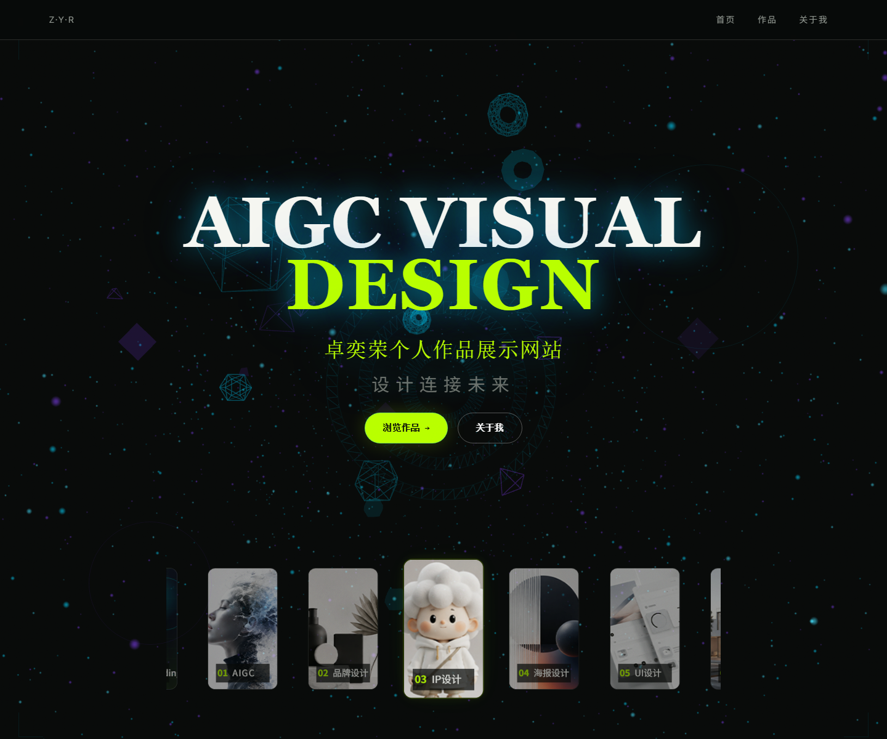
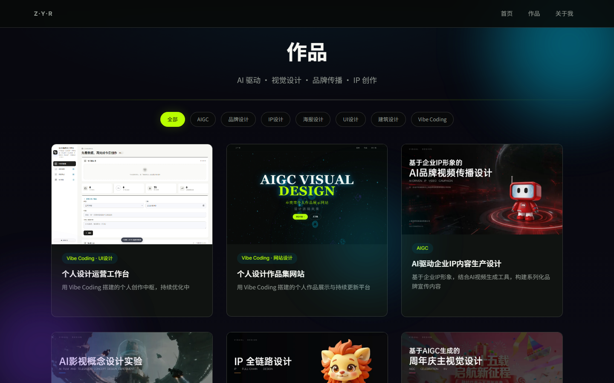
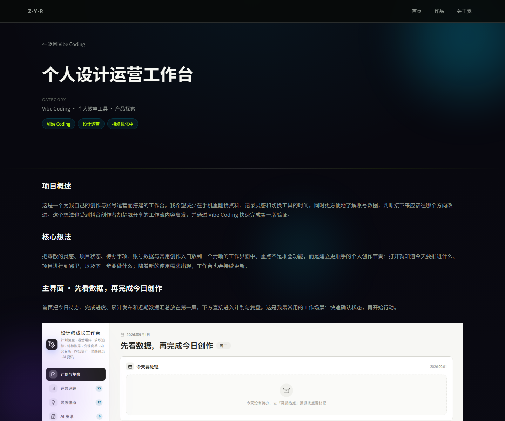
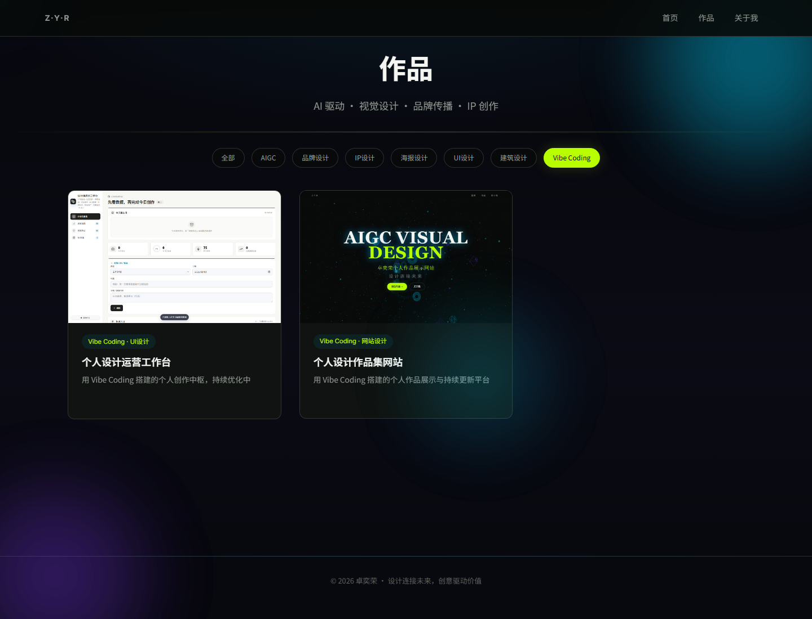

先建立方向感
用首页定位与分类轮播，让不同类型的作品一开始就有清晰入口。
这是一个为个人设计实践建立的线上作品集。它把 AIGC、品牌、IP、海报、UI 以及 Vibe Coding 项目放在同一个浏览框架中：先让访客看见我的设计方向，再让每一个项目以可阅读的案例形式被理解。网站本身也是一次从内容规划、视觉 UI 到前端实现的 Vibe Coding 实践，并会随着新项目持续更新。
我负责网站的内容梳理、分类体系、页面视觉与交互方向，并与 AI 协作完成前端搭建和持续调整。设计的重点不是把所有信息一次堆上来，而是建立一条清晰路径：第一次访问能认识我；带着具体兴趣而来的人能快速筛选；想深入了解的人则能完整阅读项目。
用首页定位与分类轮播，让不同类型的作品一开始就有清晰入口。
作品页以分类筛选承接兴趣，让浏览从“看一看”变成有目的地查找。
详情页补充背景、过程、界面与思考，让每个项目不只是一个结果图。
首页采用深色画布与星点动态背景，先用大标题建立个人识别，再用简短说明告诉访客这里展示什么。主按钮放在首屏中央，降低第一次进入时的选择成本；首屏底部的轮播区则成为下一步浏览的自然延伸，而不是额外的导航负担。

轮播不是单纯的装饰，而是首页的第一层导航：每张竖向卡片对应一个作品方向，悬停时放大当前卡片，左右切换则帮助访问者快速浏览不同类别。


我把网站设计成由“认识—筛选—深入阅读”组成的三步路径。它既满足第一次浏览时的整体感知，也让招聘方或合作方能够按项目类型快速定位，并在详情页获得足够的背景信息。
以个人定位、视觉氛围与分类轮播，建立对作品集的整体认识。
通过分类筛选收拢内容范围，快速定位感兴趣的项目。
将背景、过程、界面与结果串成完整的项目叙事。


界面以近黑背景承接内容，用荧光绿标记当前状态和可操作入口；图片则承担作品本身的色彩。导航、筛选器与详情结构使用同一套描边和间距规则，使访客在不同页面之间切换时仍能保持熟悉感。
首屏负责建立方向；筛选帮助聚焦；详情页把观看延伸为理解。
筛选状态用荧光绿强调，页面只保留匹配的作品；轮播和内容区的微动效则帮助访客判断当前焦点。

近黑背景让作品图片成为视觉焦点；浅色文字负责阅读，绿色只用于当前状态、编号和操作入口。首页保留星点与几何元素营造进入感，内容页则收敛成更安静的阅读界面。
这个网站会随着新项目持续增加。当前版本已经完成作品分类、筛选、项目详情与 Vibe Coding 项目的展示；后续会继续完善移动端体验和案例内容。